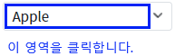
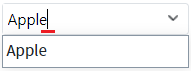
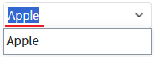

속성 'editType'의 설정 값 비교 예제입니다. 이 속성은 편집 모드 전환 시 입력 필드의 문자열 선택 유형을 설정할 수 있습니다.
설정 값에 따른 동작은 다음과 같습니다.
"focus" : 편집 모드 전환 시 입력 필드의 문자열 마지막에 커서가 위치됩니다.
"select" : [default] 편집 모드 전환 시 입력 필드의 문자열이 선택됩니다.
편집 모드 전환 시 입력 필드의 문자열 마지막에 커서 위치시키기
편집 모드 전환 시 입력 필드의 문자열 선택하기
STEP1. 초기 상태 확인하기
영역 [editType="focus"]에 구성된 예제를 확인합니다.STEP2. 편집 모드 전환하기
'AutoComplete'을 클릭합니다. 우측에 구성된 버튼을 클릭하면 목록이 표시됩니다. 버튼을 제외한 컴포넌트 영역을 클릭합니다.
그림 1.브라우저(Chrome) 실행 예시

STEP3. 실행 결과를 확인합니다.
편집 모드로 전환되고 입력 필드의 문자열 마지막에 커서가 위치됩니다.
그림 2.브라우저(Chrome) 실행 예시

STEP1. 초기 상태 확인하기
영역 [(기본 설정) editType="select"]에 구성된 예제를 확인합니다.STEP2. 편집 모드 전환하기
'AutoComplete'을 클릭합니다. 우측에 구성된 버튼을 클릭하면 목록이 표시됩니다. 버튼을 제외한 컴포넌트 영역을 클릭합니다.
그림 3.브라우저(Chrome) 실행 예시
STEP3. 실행 결과를 확인합니다.
편집 모드로 전환되고 입력 필드의 문자열이 선택됩니다.
그림 4.브라우저(Chrome) 실행 예시

속성을 정의합니다.
[필수] editType="옵션 값"
제시된 옵션 값으로 설정합니다.
(옵션 값)
- "focus" : 편집 모드 전환 시 입력 필드의 문자열 마지막에 커서가 위치됩니다.
- "select" : [default] 편집 모드 전환 시 입력 필드의 문자열이 선택됩니다.
editType